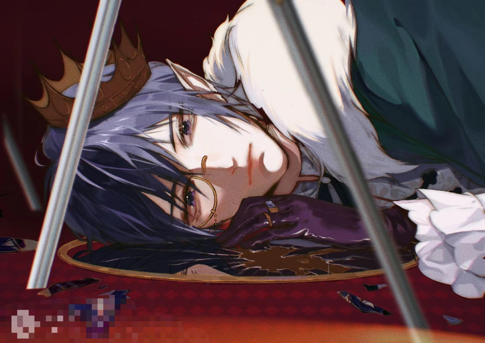

一些小话
高中艺考的时候刚接触平板时画了这张画，我想集训的时光一定是蓝色的，蓝色的水桶，蓝色的施德楼，北京郊区的蓝色天空，只有手中集训的画不会出现蓝色的天空
那时候还能这样慢慢的，观察其中的色彩关系，阴影里敢加大胆的冷暖跳色，大学以后大量的作业比赛画着画着已经麻木了，这样的亮暖暗冷更多是机械的重复。
但是这并不影响我依然热爱，我在说什么，好吧，我只是想是时候起身骑自行车去吃一顿麦当劳了，当然，是写完网页设计的时候
其他小话
虎虎生威 2021.12

呼啸山庄 2022.3
